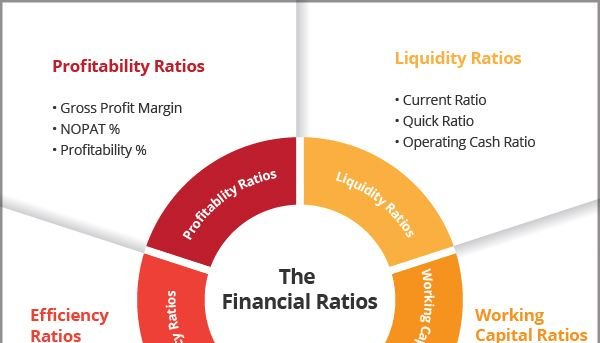

{% extends 'base.html'%} {%block body %}

<!-- 
<button type="button" id="button2" class="btn btn-lg btn-primary" data-toggle="popover" title="流動比率(Current Ratio)" data-content="And here's some amazing content. It's very engaging. Right?">流動比率</button> -->

<div  style="margin-left:20px;float:left">


</div>

<div style="margin-left:20px;float:left">
    
    
    </div>

    <div style="margin-left:20px;float:left">
        
        
        </div>

        <div style="margin-left:20px;float:left">
            
            
            </div>


            <div style="margin-left:20px;float:left">
                
                
                </div>

{%endblock%}

{% block script %} 


<script>
$(function () {
  $('img').popover({
        container: 'body'
  })
})
  </script>
{% endblock %}